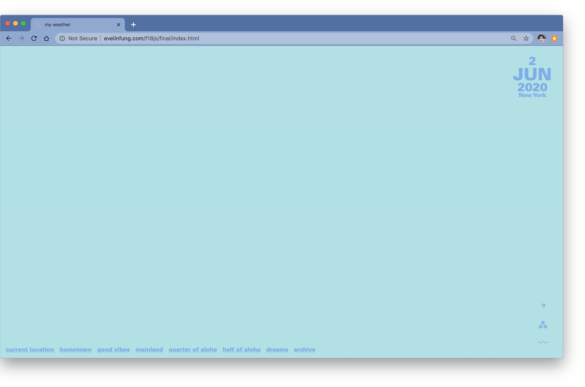
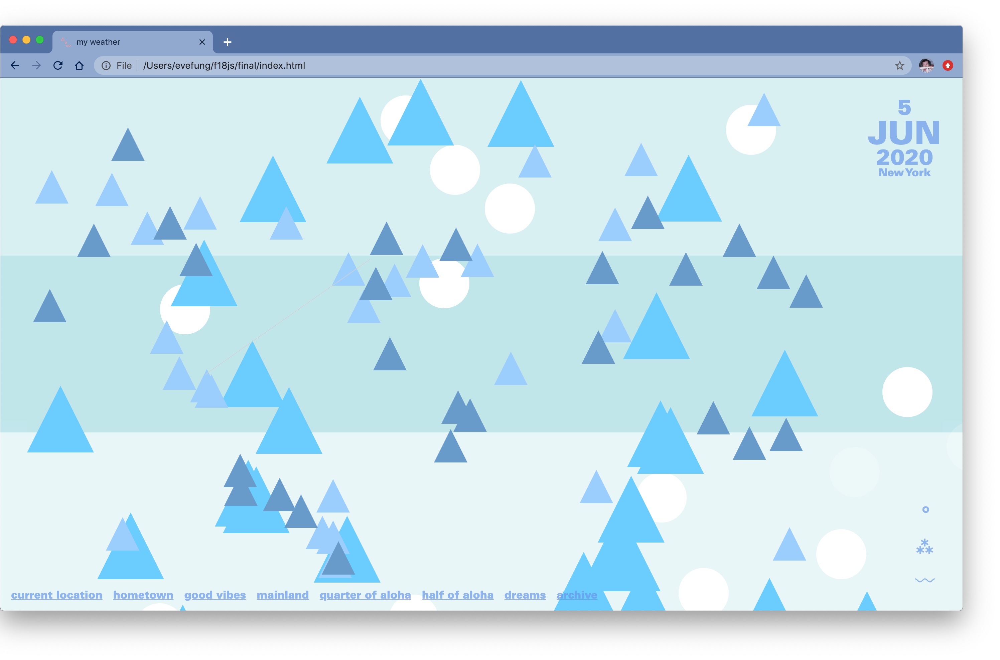
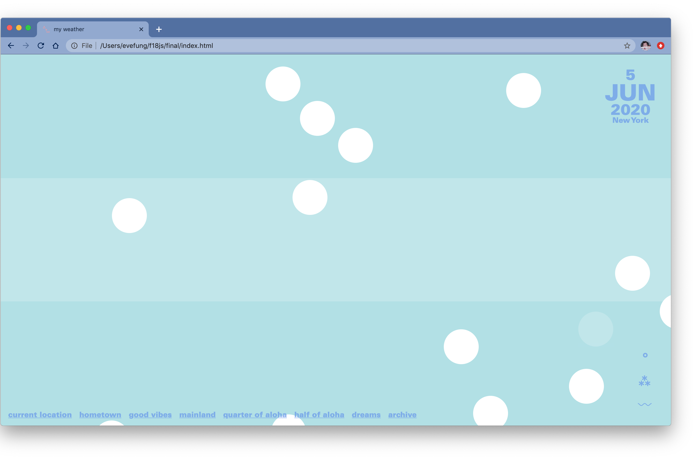

This project was created for ‘Web Advanced: Javascript’(2018),this class focused in furthering coding skills while creating interactive sites with various purposes and design processes. This project’s prompt was to make and interactive and living website with at least one API and complementary content.


“My Weather” goal was to mesmerise the user through the combination of colours, shapes and the small interactions that each has. There are seven screens that the user can pick from, each screen is a certain location that is related to me. Whether it is my hometown back in Costa Rica or where my friends are (California and Hong Kong). Each location comes with three options to call upon the Open Weather API, the user can see the forecasted temperatures (°), precipitation (⁂) and wind speed (〰) in real time.

